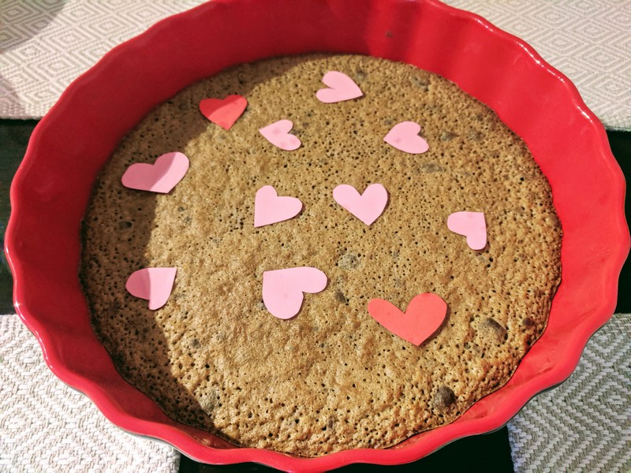
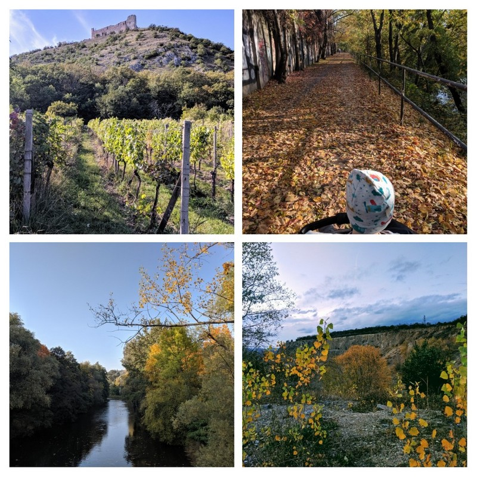
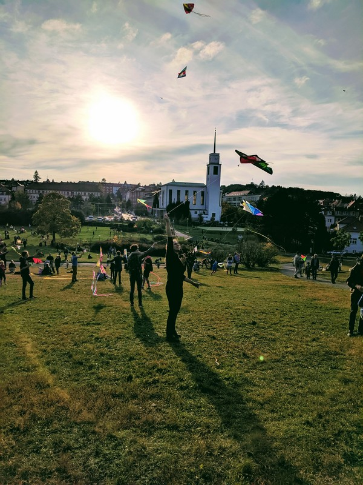
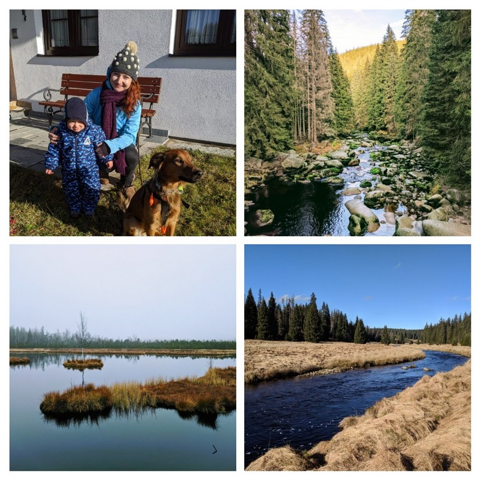

Hrozně ráda bych sem napsala, že to nejhorší, co nás tenhle podzim potkalo, bylo úmrtí Karla Gotta 8-) Bohužel se občas dějou věci, které vám ve vteřině obrátí život vzhůru nohama. Ty dva úrazy, které se během jednoho měsíce v naší rodině staly, naštěstí nebyly úplně fatální. Ale změnily nás asi už navždycky. Jak mi ale napsala L., která si v té samé době procházela taky těžkou životní zkouškou - jsou mnohem, mnohem horší věci, věci, co už nejdou vrátit. Ta slova povzbuzení právě od ní mě dojala. Věřím a vím, že každá taková zkouška nás má v životě posunout. Bez ní bychom si nikdy neuvědomili, kolik ohromné síly v sobě máme…
Letos jsme s Péťou oslavili neuvěřitelných 10 let od našeho seznámení a tři roky od svatby! To už je tedy skutečně pěkný kus života a společných zážitků :-)

Podzimní procházky mají tak neskutečné kouzlo! Barevné stromy, brouzdání ve spadaném listí, řádění na hřištích až do večera… A samozřejmě nesměl chybět ani výlet na Pálavu!

Víkendy jsme se snažili trávit aktivně, pokud to počasí dovolilo. A co může k podzimu patřit víc než pouštění draka? Drakiáda na Kraví hoře se nám všem strašně líbila a napřesrok určitě vyrazíme zas!

Kvůli Olího rekonvalescenci jsme propásli tradiční “Penohory”. Hezkou útěchou nám ale bylo několik dnů strávených v milé společnosti Terky a její rodiny na Šumavě. Díky příznivému počasí jsme i v listopadu zažili Šumavu zalitou sluncem a ač bylo naše dítě mimořádně neposedné (což v kontrastu s kliďasem Davídkem o to víc vyniklo), pohled do zeleně/večerní sklenice vína vždycky uklidnil :-D
